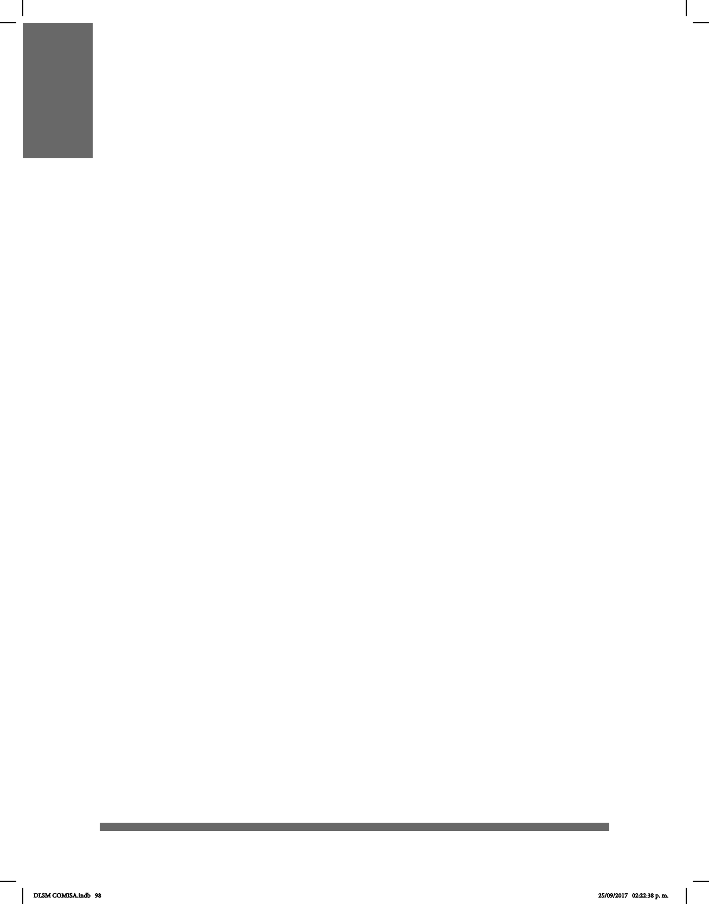

98
ESTRUCTURA LEXICOGRÁFICA
Esta obra fue planeada como un compendio léxico en LSM conformado por señas
representativas para sus usuarios nativos. Las señas que se encuentran en él
pertenecen tanto al grupo de formas adaptadas a partir de voces del español como a
formas generadas a partir de su gramática propia. Debido a esta bifurcación no siempre
hay equivalencia palabra a palabra con la lengua oral y las estrategias para presentar el
contenido varían. Por eso, este capítulo se presenta para ayudar a guiar al lector.
Ya que esta es una obra dirigida principalmente a sordos, se utilizó en cada una de
las entradas un término base, que es la forma o secuencia gráca en español más
reconocida por la comunidad sorda.
Por un lado, la descripción de las señas en la obra está basada en la tesis doctoral de
Miroslava Cruz Aldrete, es decir, a partir de la descripción de rasgos distintivos de cada
realización. En algunas descripciones se incluyen notas culturales o representaciones:
las notas culturales son advertencias ante el posible choque de culturas sorda y oyente,
mientras que las representaciones son referencias a la iconicidad de cada seña. Las
explicaciones de estas representaciones fueron hechas por los intérpretes de la LSM.
Por otro lado, se denió la palabra en español y no el concepto directo de la LSM.
Sin embargo, para una mayor especicidad, cada denición corresponde lo más
cercanamente posible al sentido que la comunidad sorda otorga a cada seña. Este
fue trabajo del equipo lexicográco, el cual, por consenso con las personas sordas,
decidió qué deniciones serían las más adecuadas para cada una de las señas que en
ocasiones tienen más de una entrada, por lo que están señaladas en el diccionario con
las letras (A), (B), (C), etc. Las deniciones fueron tomadas de distintas páginas de
internet y de diferentes diccionarios, principalmente el Diccionario de la Lengua Española
(DLE) y el Diccionario del Español de México (DEM).
El DLSM proporciona información para comprender la naturaleza de la lengua de
señas y cómo las personas sordas la utilizan. Además, facilita el aprendizaje en la
comunicación en LSM y el conocimiento de la cultura, personajes y eventos históricos
en la política y la educación. Por ello, esta obra puede ser de gran utilidad para la gente
en general que desee conocer el léxico de la LSM en la Ciudad de México.
El diccionario no puede ayudar a adquirir uidez en la LSM, ya que contiene solamente
señas aisladas. Los usuarios necesitan practicar y adquirir la competencia necesaria en
el uso de la gramática de la LSM y de la sintaxis para poder comunicarse adecuadamente
con las personas sordas.
Se recomienda leer las indicaciones sobre cómo se hace la articulación de la seña.
DLSM COMISA.indb 98 25/09/2017 02:22:38 p. m.